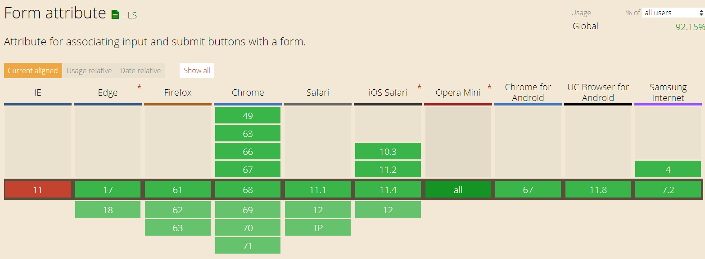

- What is the difference between the usage of HTML and CSS?
The difference is the fact that HTML is used to make the structure of the website, while the CSS is used to style the website.
- What is the newest version of HTML?
The newest version is HTML5
- What are the top five most used HTML5 elements? If not sure, make a guess.
They are: h1 to h6, div, p, img and anchor.
- Have you checked out the HTML5 cheatsheet?
Yes I have.
- What is the difference between semantic and non-semantic elements?
Semantic tell us about the meaning of the tags, they have more weight than non-semantic ones.
- Why do we prefer using semantic elements?
Because they help us define the meaning.
- Do all browsers support all of the newest HTML / CSS elements?
No.
- Test the following elements on Can I Use: svg, nav, code, form, datalist. Which browser version support them and which do not?
